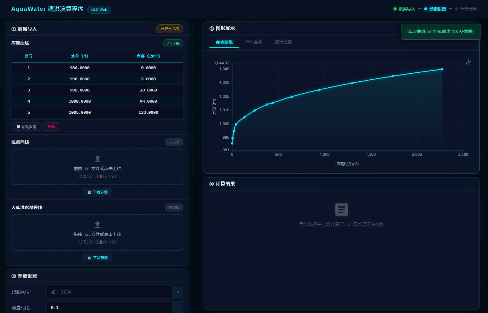
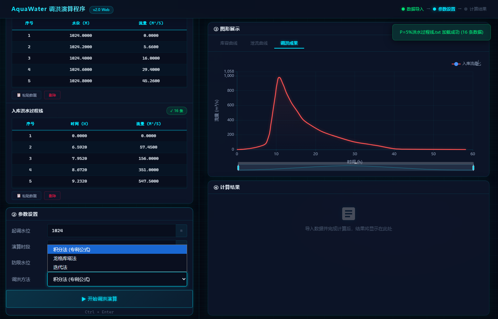
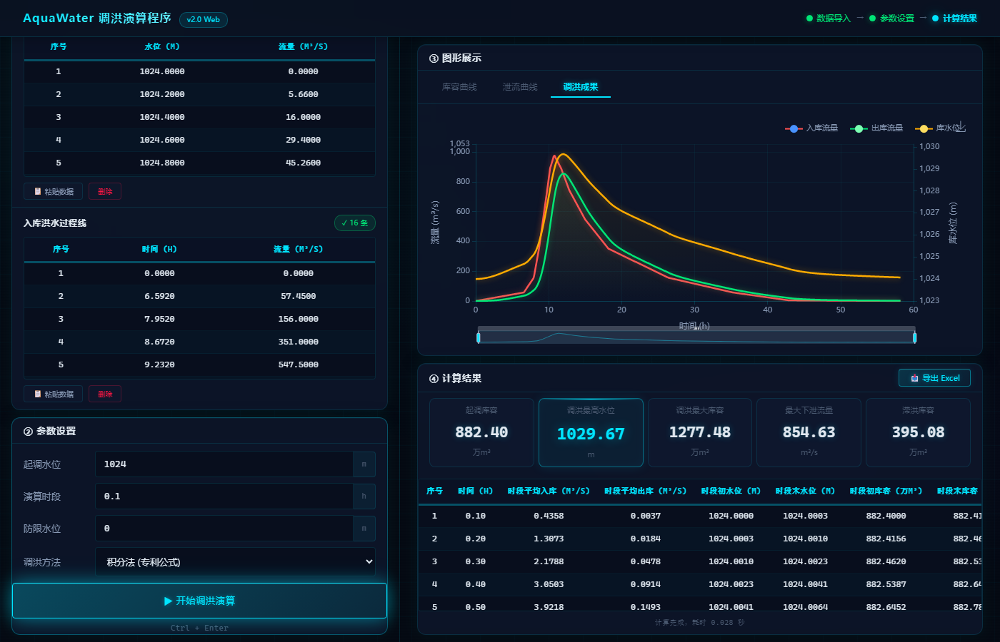
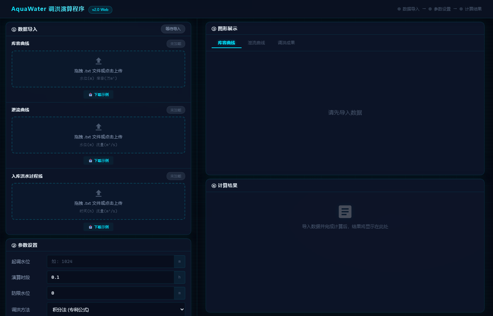

一个十几年前的 C# 桌面程序，如何在 AI 的帮助下焕然一新，变身现代化 Web 应用。
多年前，我用 C# WinForms 写了一个水库调洪演算工具。功能没问题——输入库容曲线、泄流曲线、洪水过程线，选择计算方法，就能算出调洪最高水位、最大下泄流量等关键指标，还能导出 Excel 成果表。
但它有几个硬伤：
有过想把他改造为WEB版，但始终没时间，而且习惯了C/S开发，对B/S开发不熟悉。直到最近，AI的革命让我决定试一试。
原版是 C#，核心算法大约 800 行，包含了三种调洪方法：
| 方法 | 说明 |
|---|---|
| 积分法（专利公式） | 个人专利算法，高效稳定 |
| 龙格库塔法 | 四阶数值解法，经典算法 |
| 迭代法 | 逐步逼近，兼容性好 |
重写目标很明确：Python + Flask → 浏览器即用。
后端用 Flask 提供 REST API，前端用原生 HTML/CSS/JS + ECharts 做可视化，生产环境用 Waitress 部署，支持 HTTPS 和速率限制。
整个过程，AI 完成了约 80% 的代码量——从算法翻译、API 设计、前端布局到安全加固，我只负责审查和微调。
打开浏览器，访问 http://aquawater.cn:8090，界面分为左右两栏，流程清晰：
下图完整记录了用鼠标操作完成一次调洪演算的完整过程：
▲ 全屏录屏（1920×1080）：鼠标依次操作——导入库容曲线 → 泄流曲线 → 洪水过程线 → 填写参数(起调水位1024m,防限水位0,时段0.1h) → 展开方法选择 → 点击计算 → 滚动查看结果
支持拖拽上传、点击上传、粘贴导入三种方式。系统自动解析 Tab/逗号/空格分隔的文本文件，并在表格中展示预览。
表格支持 原地编辑，如果某个数据点需要微调，双击单元格直接改，图表实时刷新。导入即出图，三种曲线可在右侧面板切换查看。

▲ 点击上传库容曲线后，左侧数据表格 + 右侧库容曲线图即时展示
填入起调水位、初始库容、时段长，选择计算方法（专利公式 / 龙格库塔法 / 迭代法），点击「开始调洪演算」——或者直接按 Ctrl + Enter。

▲ 三组数据全部导入后，填写参数（起调水位1024m、防限水位0、时段0.1h），展开方法选择下拉框
计算结果包含：

▲ 使用真实示例数据计算：P=5% 设计洪水，专利公式，起调水位1024m。特征值卡片高亮显示关键指标
分享几个印象深刻的瞬间：
800 行 C# 的水库调度算法，涉及大量的数组操作、线性插值、数值积分。我把代码贴给 AI，它几乎零误差地翻译成了 Python，连边界条件的处理都注意到了。
人工预估：20~30 天
AI 辅助实际：2~3 天审查 + 微调
「帮我写一个科技感的数据面板，左边是数据导入区，右边是图表展示区，支持暗色主题……」
几分钟后，一个完整的 HTML + CSS + JS 框架就出来了。后续的调整——表头固定、图表切换、响应式适配——基本都是一句话的事。

▲ AI 生成的初始暗色主题界面，科技感十足，布局清晰
「关闭 Flask debug 模式，换 Waitress 生产服务器，加上速率限制，上传文件限制 16MB」——五分钟后，一个生产级的 Web 服务就绪。
最让我惊讶的是调试效率。以前遇到一个 CSS 表头滚动穿透的 Bug，可能要查半小时文档。现在描述一下现象，AI 直接定位到 rgba(0,229,255,0.08) 透明度太低导致数据行透出，改一行 CSS 就好了。
服务器是阿里云 Windows Server，也可以让AI 帮我一键上传、自动配置，完全不用人管。
在线体验地址：http://aquawater.cn:8090
这次重写经历让我对 AI 辅助开发有了全新的认识：
| 维度 | 传统开发 | AI 辅助 |
|---|---|---|
| 代码产出速度 | 1x | 5~10x |
| Bug 修复速度 | 1x | 3~5x |
| 跨语言移植 | 需要学新语言 | 直接翻译 |
| UI 设计 | 需要设计师 | 描述即可生成 |
| 安全配置 | 容易遗漏 | 全面覆盖 |
核心感悟：AI 不是替代开发者，而是让开发者的能力边界大幅扩展。以前「没时间做」的事情，现在「顺手就做了」。
下一步计划：